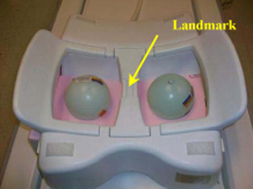

Operating Documentation
Direction 5670000, Rev# 1
Optima MR450w 1.5T Service Methods
Module Version 12.0, Version Date 11/23/09
Operating Documentation |
| Required Persons | Preliminary Reqs | Procedure | Finalization |
|---|---|---|---|
| 1 | Not Applicable | 15 mins | Not Applicable |
Follow this process to prepare for the automated SNR test using the 1.5T HD Vibrant Breast Array by GE/USAI (M3087JG) .
| NOTE: | Coils do not ship with phantoms. Phantoms come in a unified phantom set with the MR system. |
| Item | Qty | Effectivity | Part# | Manufacturer | |
|---|---|---|---|---|---|
| 10 cm Spherical Unified Phantom | 2 | Unified Phantom Set | 46-317586G1 | - | |
| Unified Phantom Positioner | 1 | Unified Phantom Set | 5343432 | - | |
| Condition | Reference | Effectivity |
|---|---|---|
For HDx, HDxt, and HDe, the following coil configuration names must be installed to run this tool: HDBreastServ, HDBreastRtServ, and HDBreastLtServe. | - | - |
For Discovery MR450 and Optima MR450w, the following coil configuration names must be installed to run this tool: HDBreastRight and HDBreastLeft. | - | - |
Place the coil on the patient table and insert the phantom positioner into the coil as shown in Illustration 1.
Illustration 1: Phantom Positioner Inserted into Coil

The position of the spherical phantoms from the side of the coil is as shown in Illustration 2.
Illustration 2: Position of Spherical Phantoms

Place the phantoms on the phantom positioner as shown in Illustration 3.
Illustration 3: Landmark on Center of Bridge

Connect the coil to Port A of the system LPCA.
Landmark on the center of the bridge between both the chambers (Illustration 3) and advance to scan.
Perform the Multi-Coil Quality Assurance Tool for the HD Vibrant Breast Array Coil.
No finalization steps.